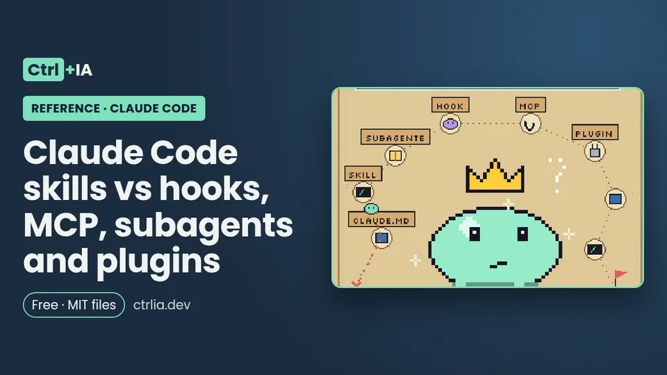

Reference · Intermediate · 12 min
Claude Code skills vs hooks, MCP, subagents and plugins
CLAUDE.md, skills, commands, subagents, hooks, MCP and plugins in Claude Code: what each is for, when to use it, where it goes and its context cost.

Tested with Claude Code 2.1.316 · reviewed
See the files on GitHub Free · MIT license
Summary
Claude Code is extended with several pieces that seem to overlap: CLAUDE.md, skills (which now include the old commands), subagents, hooks, MCP servers and plugins, plus output styles and the new mods. This reference explains in one sentence what each one is for, when the need shows up, how much context it uses, a minimal example and the Ctrl+IA recipe that covers it in depth.
The short rule: CLAUDE.md for what Claude must always know, skill for procedures, subagent to isolate work, hook for what must always happen, MCP to connect services and plugin to package and share.
Each piece in one sentence
| Piece | What it's for | Example |
|---|---|---|
| CLAUDE.md | Context loaded in every session: conventions and commands | "use pnpm, not npm" |
| Skill | Instructions, knowledge or a workflow you invoke with /name or that Claude loads when it fits the task | /deploy runs your checklist |
| Command | Since they were merged with skills, .claude/commands/deploy.md and .claude/skills/deploy/SKILL.md create the same /deploy and work the same | They still work, but use skills for new ones |
| Subagent | A worker with its own context that does a task and returns only a summary | A read-only reviewer |
| Hook | A script, HTTP request, MCP tool, prompt or subagent that Claude Code runs when an event fires (before or after using a tool, on session start…), without Claude deciding | Blocking rm -rf |
| MCP | Connects Claude to external services | Database, Slack, browser |
| Plugin | The packaging layer that bundles skills, hooks, subagents and MCP servers into one installable unit | Your kit for several repos |
On top of that, output styles set tone and format, and mods (2.1.287) are JavaScript or TypeScript plugins that change the interface or step into tool calls.
If this happens, use this
The official docs suggest adding pieces as their triggers appear, roughly in this order:
| If this happens | Use this |
|---|---|
| Claude gets a convention or a command wrong twice | Add it to CLAUDE.md |
| You keep asking it to be briefer or explain more | An output style |
| You type the same prompt to start a task | Save it as an invocable skill |
| You paste the same multi-step procedure for the third time | Turn it into a skill |
| You copy data from a browser tab Claude can't see | Connect that system via MCP |
| Claude reads many files to find where a symbol is defined | Install a code intelligence plugin for your language |
| A side task floods the conversation with output you'll never look at again | Route it through a subagent |
| You want something to always happen without asking | Write a hook |
| A second repository needs the same setup | Package it as a plugin |
The same triggers help you maintain what you already have: a repeated mistake is a CLAUDE.md edit, not a correction in the chat.
Where each piece lives
my-project/
├── CLAUDE.md # always loaded: commands, conventions ("use pnpm")
├── .mcp.json # project MCP (shared): databases, APIs, browser
└── .claude/
├── settings.json # team hooks, permissions and statusLine
├── rules/api.md # rules that only load when touching certain paths (paths:)
├── skills/release/SKILL.md # /release: a procedure you or Claude invoke
├── commands/deploy.md # old format: also creates /deploy (now it's a skill)
└── agents/reviewer.md # subagent: a worker with its own context
~/.claude/ # the same, but yours and for all your projects
├── CLAUDE.md
├── settings.json
├── skills/ agents/
└── skills/mi-kit/.claude-plugin/plugin.json # plugin created with "claude plugin init mi-kit"The status line also goes in settings.json: we cover it in the statusline recipe.
Skill or subagent
A skill is reusable content that loads into whatever context uses it; a subagent is an isolated worker that runs separately. The skill adds its text to your main context window; the subagent uses its own window and only the summary comes back to your conversation.
Use a skill for reference material (your API style guide) or workflows you invoke (/release). Use a subagent when the task reads dozens of files or runs long searches whose details you don't need, for parallel tasks or when your context is filling up. They combine: a subagent can preload skills with the skills: field in its definition, and a skill can run in an isolated context with context: fork.
A skill only you invoke, in .claude/skills/release/SKILL.md (as in our repo's en/ejemplo/):
---
name: release
description: Prepares the release notes since the last tag. Use it when asked for release notes or a changelog.
disable-model-invocation: true
---
1. List the commits since the last tag with `git log $(git describe --tags --abbrev=0)..HEAD --oneline`.
2. Group them into Features, Fixes and Documentation.
3. Write the result to CHANGELOG.md without deleting what's already there.It lists the commits since the last tag, groups them into new features, fixes and documentation, and writes them to CHANGELOG.md without deleting what was there.
Subagents are saved as Markdown with frontmatter in .claude/agents/ (project) or ~/.claude/agents/ (all your projects); the body is their system prompt. The official example, .claude/agents/code-reviewer.md, is a read-only reviewer:
---
name: code-reviewer
description: Reviews code for quality and best practices
tools: Read, Glob, Grep
model: sonnet
---
You are a code reviewer. When invoked, analyze the code and provide
specific, actionable feedback on quality, security, and best practices.We cover it in depth in the subagents recipe.
Hook or instruction (CLAUDE.md or skill)
The difference is determinism. A hook fires on its event without Claude deciding; an instruction in CLAUDE.md or in a skill is something Claude interprets and may not follow. The official docs say it plainly: "never edit .env" in CLAUDE.md is a request, not a guarantee; a PreToolUse hook that blocks the edit is a barrier. If a rule must always hold, make it a hook (or a deny permission rule), not a sentence.
Use a hook to format after every edit, block dangerous commands, log or notify. Use a skill when Claude must decide how to apply the steps or the content is knowledge: a release checklist, a style guide, a debugging playbook (like the one in debug a bug).
Context cost: a hook costs nothing unless it returns text; the output of a PostToolUse that runs your linter does enter the context, and a /fix-lint skill explains to Claude how to resolve it. Hooks from every source add up: all the ones that match the event run.
Official example: format with Prettier after every edit, in .claude/settings.json (requires jq):
{
"hooks": {
"PostToolUse": [
{
"matcher": "Edit|Write",
"hooks": [
{
"type": "command",
"command": "jq -r '.tool_input.file_path' | xargs npx prettier --write"
}
]
}
]
}
}We didn't run this hook: jq isn't installed on our test PC. The security hooks recipe uses Python so it doesn't depend on jq.
MCP or skill
MCP connects Claude to an external system and gives it tools and data: querying your database, posting to Slack, driving a browser. A skill gives it knowledge about how to use those tools well, plus invocable workflows. They don't compete, they complement each other: the MCP server provides the connection and authentication, and a skill documents your database schema and query patterns, or defines a /post-to-slack with your team's message format.
You add them with claude mcp add (for example, --transport http for a remote server) and check them inside the session with /mcp:
# Connect an external service over HTTP (official example)
claude mcp add --transport http notion https://mcp.notion.com/mcp
# Inside the session: status and authentication
/mcpCost: at startup only tool names are loaded; full schemas load when they're used, because tool search is on by default. If the same server name exists in several scopes, local wins over project and project over user. We cover it with Playwright, GitHub and databases in the MCP recipe.
Plugin: when to package (and what mods are)
A plugin isn't a new piece, it's a box. It bundles skills, hooks, subagents and MCP servers to reuse them across repositories or distribute them in a marketplace. A plugin's skills are namespaced (/my-plugin:review) so several plugins can coexist. The minimal structure is a .claude-plugin/plugin.json manifest with the name and components.
Since 2.1.157, claude plugin init <name> generates it for you. On our PC it created ~/.claude/skills/mi-kit/ (in the user folder, even though the CHANGELOG says .claude/skills) with SKILL.md and .claude-plugin/plugin.json:
# Package your setup as a plugin (since 2.1.157)
claude plugin init mi-kit
# ✔ Created plugin "mi-kit" at ~/.claude/skills/mi-kit
# It will auto-load next session as mi-kit@skills-dir. Run /reload-plugins to load it now.
# Creates two files: SKILL.md and .claude-plugin/plugin.json
# See what a plugin includes and how much context it costs
claude plugin details mi-kit@skills-dir
# Disable or remove it
claude plugin disable mi-kit@skills-dir # or delete the folderWhile you develop it you don't need a marketplace: load it from its folder with --plugin-dir.
Mods (2.1.287) are plugins with JavaScript or TypeScript handlers that run inside Claude Code: they can draw a panel, change parts of the interface or step into a tool call. If a hook, a skill or an MCP server already does what you need, don't write a mod. We haven't written one for this reference.
How much context each piece uses and who wins when they repeat
| Piece | Context cost | If it exists at several levels |
|---|---|---|
| CLAUDE.md | Loaded in full at startup and costs on every request; keep it under 200 lines | They add up: all of them contribute |
| Output style | On every request (nothing for the default one) | — |
| Skills | Only name and description on every request; full content when used. With disable-model-invocation: true, nothing until you invoke it | Replaced by name: managed > user > project. If a skill and a command share a name, the skill wins |
| MCP | Tool names at startup and schemas on demand | Replaced by name: local > project > user |
| Subagents | Context isolated from the main one | Replaced by name: managed > CLI flag > project > user > plugin |
| Hooks | Zero, unless they return text | They add up and all of them run |
disable-model-invocation: true is recommended for skills with side effects. To check the real cost, /context shows what fills the window and /skill-doctor what each skill costs and how much it's used.
What we checked
On Linux with Claude Code 2.1.316 we checked claude plugin --help and claude plugin init mi-kit (the folder it created was deleted right away). The subagent, hook and MCP examples are verbatim from the official docs; the skill one follows the format of the first skill recipe. We didn't run the Prettier hook or write a mod. Sources: features, skills, subagents, hooks, MCP, plugins, mods and the CHANGELOG.
FAQ
What's the difference between a skill and a command in .claude/commands?
In practice, none today: commands were merged into skills and both create /name. A skill adds a folder for supporting files, more frontmatter fields and the option for Claude to load it on its own. If both exist with the same name, the skill wins.
Can I put a security rule in CLAUDE.md?
You can, but it's a request, not a guarantee. For what must always hold, use a PreToolUse hook or a deny rule in permissions (see security hooks and permissions).
Does a subagent use fewer tokens?
Not necessarily in total: it uses its own window with its own input and output tokens. What it saves is context in your main conversation, which only gets the summary.
Do I need a plugin to use my skills?
No. Skills in .claude/skills/ or ~/.claude/skills/ work on their own. A plugin is for packaging several pieces and taking them to other repositories or other people.
What is a mod and how is it different from a hook?
A settings hook runs a command, an HTTP request or a prompt outside Claude Code. A mod is a plugin with JavaScript or TypeScript functions that run inside Claude Code and can draw interface or step into tool calls. Available since 2.1.287.
Where do I start if I have nothing?
With a CLAUDE.md holding the project's commands and conventions. If your team already uses AGENTS.md, see AGENTS.md vs CLAUDE.md. Then add each piece when its trigger shows up (see the "If this happens, use this" section).